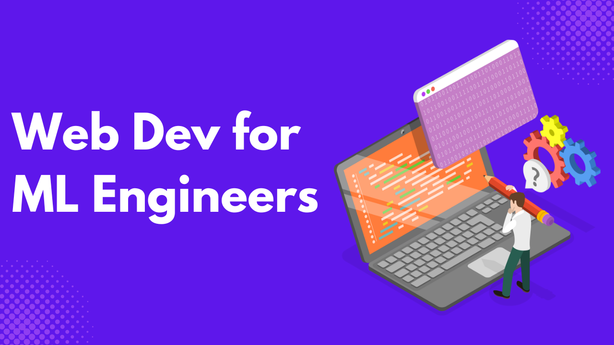

In an era where “ML” and “AI” are the latest industry buzzwords, one essential skill often overlooked by aspiring machine learning engineers is web development.
Early in my ML journey, I was obsessed with leaderboard performance; fine-tuning models on Kaggle and Zindi to gain a 0.0001% boost in accuracy. But I soon realized that outside competitions, performance metrics don’t matter unless your model is accessible and usable by real people. Most users don’t care about ROC curves or F1 scores; they care about how the model helps them solve a problem.
This realization led me to web development. If users are to interact with your ML solution, you must expose it through intuitive interfaces, APIs, or real-time applications. This article explains why foundational web development skills are increasingly crucial for ML and AI practitioners.
The Modern ML Landscape
The Role of an ML Engineer
A machine learning engineer’s typical responsibilities include collecting data, training models, evaluating performance, and fine-tuning hyperparameters. However, this is only part of the pipeline.
After training a model, the next challenge is model deployment, also known as inference, which involves bringing the model into production. This includes creating APIs, deploying models to servers, and integrating them into products that users interact with.
Unfortunately, many ML engineers focus solely on algorithm performance and neglect this final, critical step: serving the model to end users. This is where web development skills come into play.
The Shift Toward Full-Stack ML
In the past, ML engineers handed off their models to software engineers for deployment. Today, ML engineers are expected to build end-to-end solutions, from data ingestion to user interaction, especially in startups and lean teams.
This shift has driven the growth of MLOps (Machine Learning Operations), which brings automation, scalability, and monitoring to the ML lifecycle. Basic web development knowledge makes implementing MLOps workflows and building more robust systems easier.
A model only has real-world value if people can use it. Making it accessible, interactive, and reliable is crucial, and these goals overlap heavily with traditional web development.
Where Web Development Skills Fit In
Frontend Development for ML
A simple user interface allows users to interact with your model, provide feedback, and validate edge cases. Contrary to popular belief, this doesn’t require mastering HTML, CSS, or JavaScript from scratch.
- Python-friendly frameworks like Streamlit, Dash, and Shiny allow you to build dashboards or web apps with minimal code.
- If you’re comfortable learning JavaScript, frameworks like React or Vue offer more flexibility and scalability for production-grade frontends.
The goal isn’t to become a designer—it’s to make your model accessible and usable.
Backend Development and APIs
Serving your model to other applications or users usually involves creating an API.
- Flask and FastAPI are two lightweight Python frameworks widely used for building REST APIs.
- With FastAPI, you can efficiently serve your ML model, handle incoming data, and return predictions—ideal for real-time applications.
You may also need to persist user inputs or logs. In such cases:
- Use ORMs like SQLAlchemy or SQLModel for SQL databases.
- Consider NoSQL databases like MongoDB or Firebase for flexible schema needs.
Deployment and Infrastructure
Once your model is wrapped in an API and connected to a frontend, it must be deployed.
- Docker is a great way to containerize your app and ensure consistent deployment across different environments.
- Hosting options include Heroku, Render, AWS, Google Cloud, and Azure—many offer free tiers for small projects.
Setting up CI/CD pipelines ensures automated testing, deployment, and retraining workflows for production-grade projects. GitHub Actions is a great starting point.
Real-World Use Cases
Web development empowers ML engineers to do much more than just modeling:
- Interactive Prototypes: Build a Streamlit app to validate your model’s performance with real user inputs.
- Data Exploration Dashboards: Use Dash or Shiny to allow stakeholders to explore predictions and metrics dynamically.
- ML-Powered Products: Integrate models into full-stack apps such as fraud detection tools, recommendation systems, and chatbots.
- Startup Flexibility: In small teams, you’ll often wear multiple hats. Web development lets you move quickly from idea to prototype.
Rather than emailing static reports or Jupyter Notebooks, you can deliver interactive tools that provide a better user experience and more valuable insights.
Addressing Concerns & Misconceptions
“I’m not a front-end person.”
You don’t need to be. The goal isn’t to become a UX designer but to build functional interfaces that allow interaction with your models. Tools like Streamlit, Gradio, or simple HTML templates can get you up and running without a design background.
“Isn’t this a software engineer’s job?”
Traditionally, yes—but roles are evolving. In cross-functional teams and early-stage startups, ML engineers are often expected to own the full lifecycle, from model design to deployment. Even if you collaborate with software engineers, understanding the system integration process makes you more effective and collaborative.
Knowing how your model fits into the product ensures you build realistic, reliable, scalable ML solutions.
Conclusion
The era of siloed ML engineering is coming to an end. Today, machine learning is about building accurate models and delivering user value. That value is only realized when models are integrated into real-world systems, accessible through intuitive interfaces, and responsive to feedback.
Web development is not a distraction for ML engineers—it’s an enabler. It bridges the gap between technical brilliance and practical usability.
By acquiring foundational web development skills, you:
- Gain autonomy to deploy and showcase your work.
- You can make your models practical, testable, and interactive.
- Become a more valuable team member in cross-functional settings.
- Open the door to building and owning full-stack AI products.
If you want your work to be seen, used, and improved by others, then it’s time to think beyond the notebook. Start small; build a dashboard with Streamlit, expose your model with FastAPI, or deploy a prototype on Render or Heroku. Each step toward the full-stack mindset moves you closer to turning your models into impactful, user-facing products.
In short, learning web development doesn’t make you less of a machine learning engineer; it makes you complete. If you’re ready to move beyond the notebook and bring your models to life, the journey starts with small steps: build a dashboard, deploy an API, and iterate.
To make that journey easier, I’ve created a practical, beginner-friendly course: “ML Model Deployment with FastAPI and Streamlit.”
This course walks you through building and deploying real ML applications using the tools you already know: Python, FastAPI, and Streamlit. So, you can stop waiting for engineers and start deploying your solutions.
Need Help with Data? Let’s Make It Simple.
At LearnData.xyz, we’re here to help you solve tough data challenges and make sense of your numbers. Whether you need custom data science solutions or hands-on training to upskill your team, we’ve got your back.
📧 Shoot us an email at admin@learndata.xyz—let’s chat about how we can help you make smarter decisions with your data.